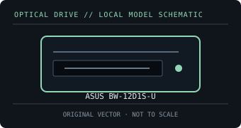

[ OPTICAL DRIVES // IDENTIFIED EXTERNAL MODEL ]
ASUS BW-12D1S-U
External desktop BDXL Blu-ray writer with USB 3.0 and a dedicated power adapter; exact model suffix matters for support and accessories.

IDENTIFICATION: Match the exact label and suffix to manufacturer documentation. Ratings are maximums under supported-media conditions, not guaranteed sustained speeds.
Model-specific specifications
| Catalog subcategory | External Blu-ray drives |
|---|---|
| Exact model / SKU | ASUS BW-12D1S-U |
| BD formats and read rates | BD-ROM; BD-R (SL/DL/TL/QL), BD-RE and BDXL recordable/rewriteable layers; M-DISC BD-R is listed for compatible media. Read: BD-ROM / BD-R up to 12×; BD-RE up to 10× (layer and media dependent). |
| BD write formats and rates | BD-R up to 12× (lower limits for BDXL layers); BD-RE up to 2×; BDXL BD-R QL up to 6× and TL up to 8×. |
| DVD formats and read rates | DVD-ROM, DVD±R, DVD±R DL, DVD±RW, DVD-RAM and DVD+R M-DISC. Read: DVD-ROM and DVD±R up to 16×; DVD±RW up to 12×; DVD-RAM up to 5×. |
| DVD write formats and rates | DVD±R up to 16×, DVD±R DL 8×, DVD+RW 8×, DVD-RW 6×, DVD-RAM 5×; DVD+R M-DISC up to 4×. |
| CD formats and read rates | CD-ROM, CD-R and CD-RW. Read: CD-ROM/CD-R up to 40×; CD-RW up to 32×. |
| CD write formats and rates | CD-R up to 40×; CD-RW up to 24×. |
| USB interface and power | USB 3.0 (USB 3.2 Gen 1) Type-A host link; external 12 V / 3 A DC adapter is required. Not USB bus-powered. |
| Host compatibility and software | ASUS lists Windows and Mac OS X compatibility for drive/data functions. Bundled CyberLink playback and authoring utilities are Windows software; protected Blu-ray playback needs a compatible OS, application and HDCP-capable graphics/display chain. |
| Model caveat | The BD-R 12× rating is a maximum for supported discs; BDXL and rewritable-media rates differ. A USB 2.0 connection can constrain transfer/burn performance. |
Host, media and preservation notes
- Separate drive-level disc support from playback application, region policy, codec licensing and any protected-video/HDCP requirements.
- Use supported media and a stable data/power connection; firmware, media quality, layer, recording mode and USB bandwidth affect actual speed.
- For an archival image, log drive model/firmware, host OS, software, media type, verification result and checksums.
Manufacturer and manual sources
- ASUS — BW-12D1S-U specificationsManufacturer specification table for supported formats and maximum speeds.
- ASUS — BW-12D1S-U quick installation guide (PDF)Manufacturer installation guide covering connection, power and setup.
Published X-speed ratings are maximum format-specific rates. Actual operation depends on supported media, software, host throughput and operating conditions.